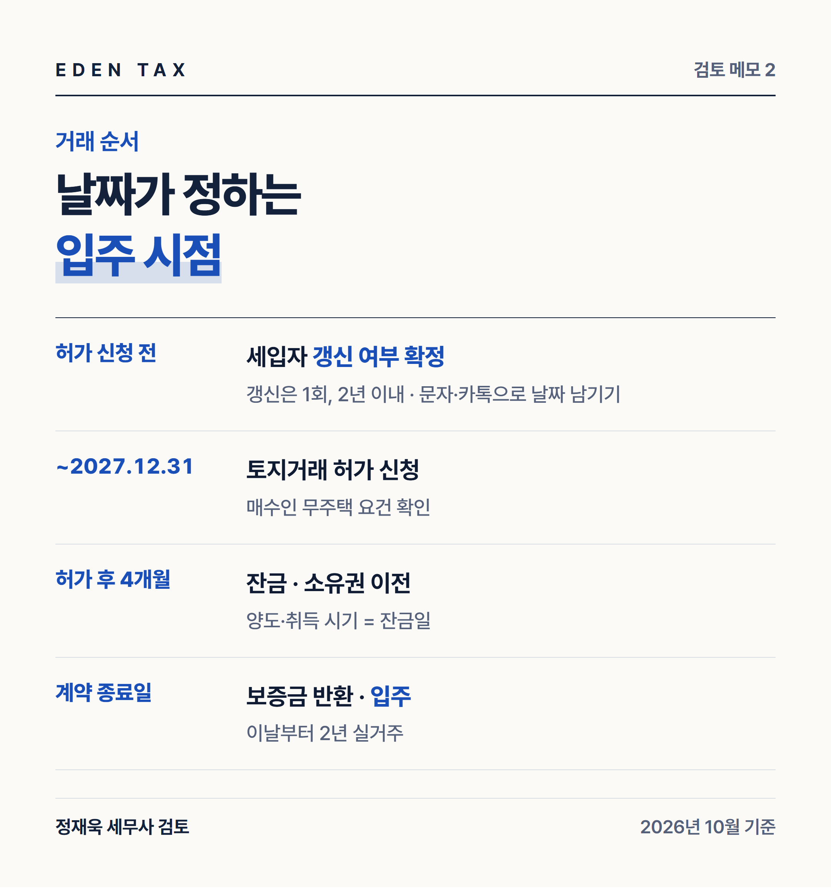
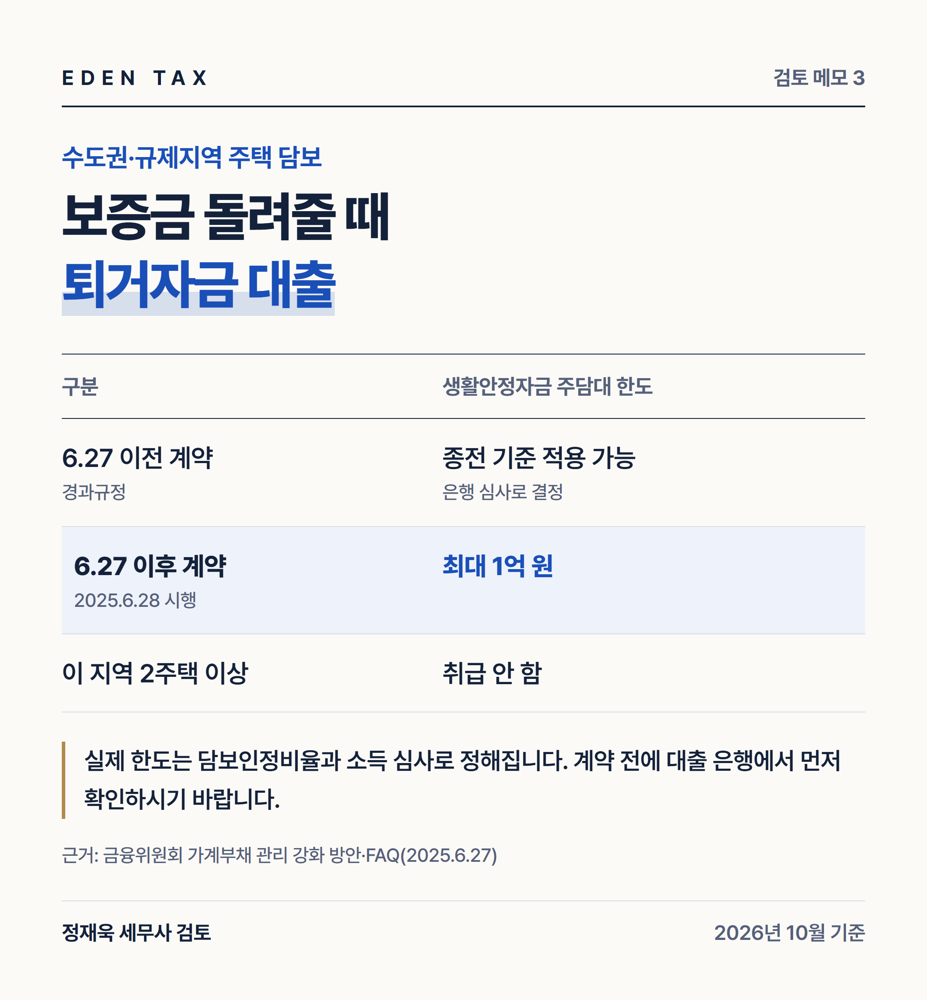

토지거래허가구역에서 주거용으로 허가를 받으면 산 사람이 직접 들어가 살아야 합니다. 그래서 세입자가 남아 있는 집은 사실상 거래가 막혀 있었습니다. 2026년 10월 1일 시행된 개정 시행령으로 이 원칙에 예외가 생겼습니다. 다만 요건이 여럿이고 날짜가 촘촘해서, 하나라도 어긋나면 특례가 적용되지 않습니다. 계약 전에 확인할 순서대로 정리했습니다. (2026년 10월 기준)
계약 전 확인 순서
| 순서 | 확인할 것 | 기준 |
|---|---|---|
| 1 | 매수인이 계속 무주택인가 | 2026년 5월 12일 당시 무주택세대 구성원 + 허가 신청일까지 유지 |
| 2 | 그 집이 임대 중인가 | 2026년 10월 1일 당시 임대 중이거나 전세권 설정 |
| 3 | 허가 신청 기한 | 2027년 12월 31일까지 |
| 4 | 허가 뒤 취득 기한 | 허가일부터 4개월 이내 |
| 5 | 세입자 계약 종료일 | 허가일부터 4개월 안에 끝나면 특례 아님 |
| 6 | 보증금 반환 자금 | 생활안정자금 대출 한도 확인 |
여섯 가지 중 하나라도 어긋나면 취득일부터 바로 2년을 살아야 하는 원래 규정으로 돌아갑니다.
1~2. 누가, 어떤 집을 살 수 있나
특례를 받는 매수인은 2026년 5월 12일 당시 무주택세대 구성원이었고 허가를 신청하는 날까지 계속 무주택인 사람입니다. 중간에 한 번이라도 집을 가졌다면 해당하지 않습니다. 세대 기준이므로 세대원 전원의 보유 이력을 봐야 합니다.
대상 주택은 2026년 10월 1일 당시 임대 중이거나 전세권이 설정된 집입니다. 등록임대 아파트는 세제 혜택 기한에 맞춰 별도의 15개월 기한이 적용됩니다.
3~4. 날짜 두 개
허가 신청은 2027년 12월 31일까지입니다. 국토교통부가 2026년 9월 17일 기존 2026년 12월 31일이던 기한을 1년 늘린 결과이고, 개정 시행령(대통령령 제36740호)이 9월 30일 공포되어 10월 1일부터 시행 중입니다.
허가를 받으면 4개월 안에 취득해야 합니다. 잔금일을 이 안에 맞춰야 하므로 대출 실행 일정까지 역산해 두어야 합니다.
5. 2년을 언제부터 세는가

실거주 2년은 취득일이 아니라 세입자 계약의 최초 종료일부터 셉니다. 허가를 신청하기 전에 기존 세입자와 2년 이내로 갱신했다면 갱신된 계약의 종료일부터입니다. 갱신은 1회, 최대 2년까지 유예 기간에 들어갑니다.
여기서 두 가지를 놓치기 쉽습니다.
첫째, 갱신은 허가 신청 전에 이뤄져야 합니다. 허가를 받은 뒤 세입자와 다시 계약하면 그 기간은 인정되지 않습니다.
둘째, 세입자 계약 종료일이 허가일부터 4개월 안에 돌아오면 특례가 적용되지 않습니다. 이 경우 원래 규정대로 취득일부터 바로 2년을 살아야 합니다. 세입자가 곧 나가는 집이라면 특례를 전제로 계약하면 안 된다는 뜻입니다.
세입자의 갱신 의사와 퇴거 날짜는 문자나 카카오톡처럼 날짜가 남는 방법으로 받아 두시기 바랍니다. 입주 시점을 다툴 일이 줄어듭니다.
6. 법령보다 자주 막히는 곳

실제 거래에서 더 자주 걸리는 쪽은 자금입니다. 세입자가 나갈 때 새 집주인이 보증금을 돌려줘야 하는데, 이때 받는 대출을 금융회사는 임차보증금 반환 목적 생활안정자금 주택담보대출로 취급합니다.
금융위원회의 2025년 6월 27일 가계부채 관리 강화 방안에 따라 수도권과 규제지역 주택을 담보로 한 생활안정자금 대출은 1억 원이 한도이고, 그 지역에 주택이 2채 이상이면 취급하지 않습니다(2025년 6월 28일 시행). 보증금이 1억 원을 크게 넘는 강남권 아파트라면 나머지는 자기 자금으로 메워야 합니다.
6월 27일 이전에 계약을 마친 경우에는 경과규정에 따라 종전 기준을 적용받을 수 있습니다. 계약 시점이 6월 27일 전인지 후인지로 받을 수 있는 금액이 달라지므로 날짜부터 확인하셔야 합니다.
매수할 때 주택담보대출을 받는다면 전입 의무도 봐야 합니다. 금융위원회는 2026년 4월 1일 이 특례를 발표하면서 대출 전입 의무를 임대차 계약 종료일로부터 1개월 뒤까지 미루기로 했습니다. 10월에 넓어진 갱신계약분까지 같은 기준인지는 대출 은행에서 확인해야 합니다.
세금은 잔금일에 걸립니다
양도 시기와 취득 시기는 원칙적으로 잔금을 치른 날입니다(소득세법 제98조). 허가 후 4개월 안에 잔금을 치러야 하므로, 매도인은 1세대 1주택 비과세 요건이나 다른 주택의 처분기한을 이 날짜에 맞춰 다시 계산해야 합니다.
매수인은 나중에 팔 때를 생각해야 합니다. 취득할 때 조정대상지역에 있던 주택은 1세대 1주택 비과세를 받으려면 보유기간 중 2년 이상 거주해야 합니다(소득세법 시행령 제154조 제1항). 토지거래허가 때문에 사는 2년이 이 거주기간으로도 쓰이므로, 전입일과 거주 기록을 처음부터 정리해 두시는 편이 낫습니다.
계약 전에 날짜부터 맞춰 보십시오
전세 낀 집을 사고팔 때 가장 많이 놓치는 것은 두 가지입니다. 하나는 언제까지 들어가서 전입해야 하는지이고, 다른 하나는 세입자를 내보낼 때 퇴거자금 대출이 얼마까지 나오는지입니다. 대출은 6.27 대책 전에 맺은 계약인지 그 뒤의 계약인지에 따라 달라지니 날짜부터 확인하셔야 합니다. 세입자의 갱신 의사와 퇴거 날짜는 기록으로 남겨 두시기 바랍니다.
— 정재욱 세무사
에덴택스는 국세청 출신 세무사가 양도·상속·증여·취득까지 부동산 세금을 직접 봅니다. 매매계약서(또는 계약 예정 조건), 세입자 임대차계약서와 갱신 내역, 세대원의 주택 보유 이력을 가지고 오시면 허가 신청 시점과 세금을 함께 검토해 드립니다.
※ 2026년 10월 기준 법령과 국토교통부·금융위원회 발표 원문을 기준으로 작성한 일반적인 안내입니다. 토지거래허가구역 지정 범위와 기간, 대출 한도는 지자체 공고와 금융회사 심사에 따라 달라지므로 계약 전에 확인하시기 바랍니다.
※ 본 글은 세무·부동산 분석을 위한 참고자료로, 개별 세무상담이나 신고 검토를 대체하지 않으며 투자·청약을 권유하지 않습니다. 세금 신고 및 투자 결정 전 전문가의 검토를 받으시기 바라며, 이를 활용한 판단과 결과의 책임은 이용자에게 있습니다.